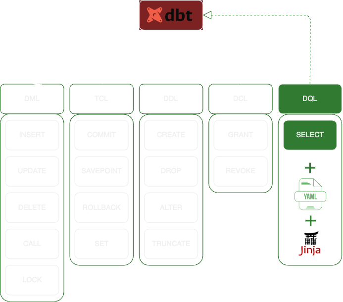
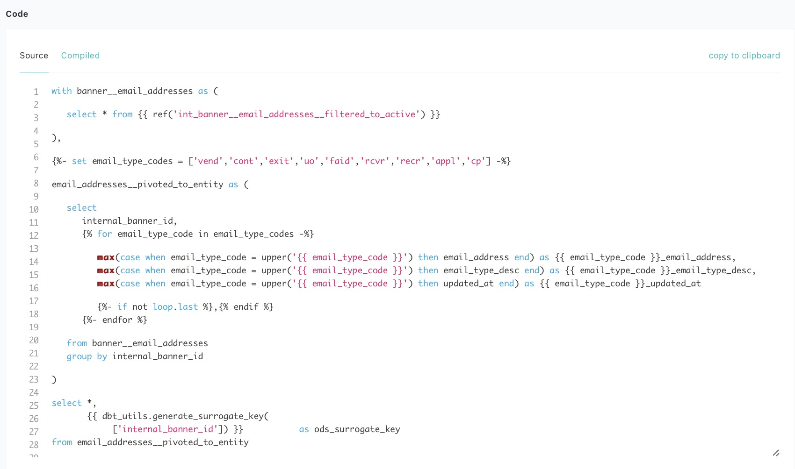
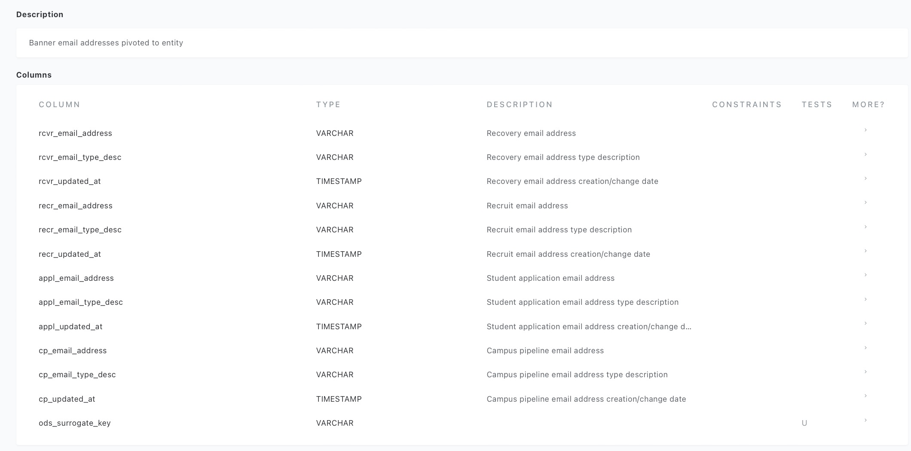

Introduction
What is DBT?
DBT (Data Build Tool) is an open-source SQL management tool designed specifically for data transformation.

DBT Cloud vs. DBT Core
DBT Cloud was released in 2018 as a paid-managed offering, however their free DBT Core product continues to recieve improvements aided by a vibrant open-source community and increasing adoption as the industry-standard in data transformation.
DBT Cloud wraps the functionality of DBT Core with managed DevOps and IDE capabilities, and supports the use of Python in addition to SQL for data transformations.
Geared for cloud-managed datawarehouse platforms, DBT Cloud lacks integration with Microsoft and Oracle (both cloud and on-premise).
Single-seat DBT Cloud developer licenses are free (limited functionality), and paid-licenses exist for Teams and Enterprises. Details for each tier change frequently, see DBT Pricing for more information.
❗DBT Core has integration with just about every platform, and DIY DevOps are well-documented.
UofO Information Services ODS implements DBT Core, with DevOps supported in-house using Jenkins and BitBucket.
❗DBT's documentation often mixes both Cloud and Core, and differences are noticiable and important.
SQL Manager?
That's right.
DBT enables analytics engineers to transform data in their warehouses by turning SELECT statements (with configuration in YAML, and dynamism with Jinja), into well-governed tables and views.

DBT's prime function is managing a large collection of small SQL SELECT scripts.
Traditional SQL Development is painfully tied to Database Management Tools, used as code IDEs. These predominently Low-Code/GUI-First experiences struggle to exploit advancements in powerful problem-solving techniques commonly utilized in software development.
DBT is a Code-First/GUI-Descriptive development experience, addressing big topics such as Data Literacy, Institutional Knowledge, Data Quality, and Technical Staffing,
Code-first/GUI-Descriptive doesn't mean DBT has higher a technical bar for adoption/collaboration, but quite the opposite, as it places basic SQL knowledge as the core competency for development. DBT is a tool for:
- ✅ Report Writers
- ✅ Business Analysts
- ✅ ERP Developers
- ✅ Application Service Managers
... all who traditionally maintain basic SQL knowledge, but more importantly, extensive domain knowledge. DBT tightly couples singular-purpose SQL statements and dependencies, with atomic business defintions and declarative expectations.
DBT is an orchestration framework for chaining DRY (don't repeat yourself) SQL statements, adorned with robust testing/metadata/lineage, and extensive platform interoperability.
Custom DBT Metadata Website
DBT provides static webpage assets as an interactive website built from DBT transformations and metadata. This website serves as a self-service metadata portal into everything DBT touches and nearly every aspect of the developed codebase:
SQL(1) and Jinja(2)

- 
Descriptions for Sources, Tables, Views, Columns, etc.(1)
- 
Ownership and Access Contols
Table/View Lineage(1)

Data Quality Tests
Many open-source tools ingest DBT to provide further GUI perspectives and enhancements, such as:
SQLMesh(1)
Elementary(2)


DBT Developer Documentation
We think DBT's great, but...
Don't take our word for it...read on!
DBT's-own What is DBT? is far better than anything we could write.
Their documentation is outstanding, and this is a great place to start.